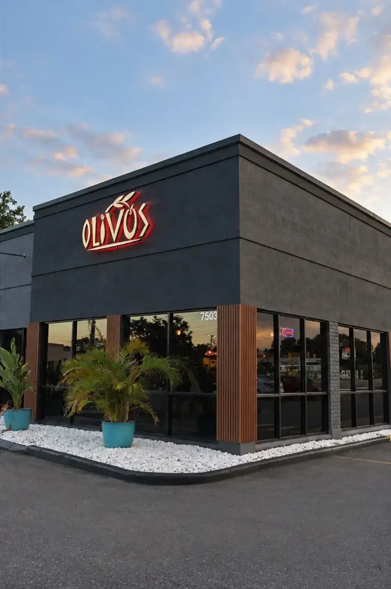
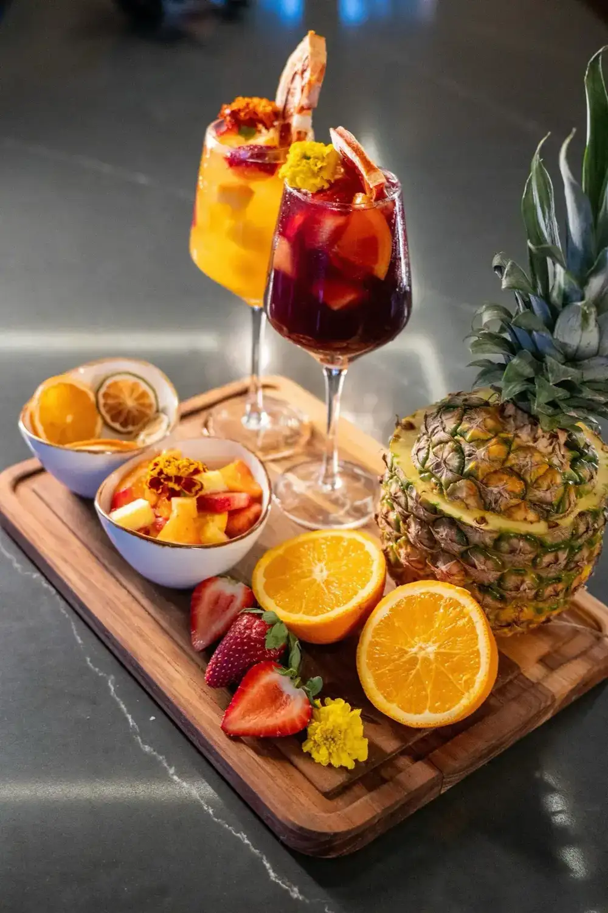
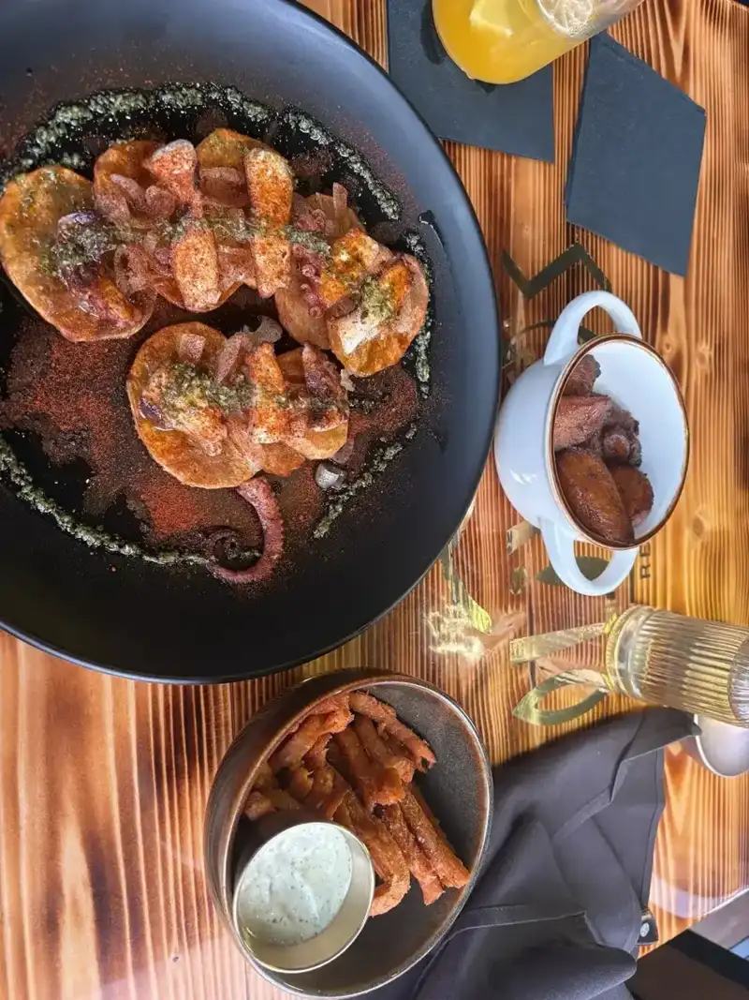
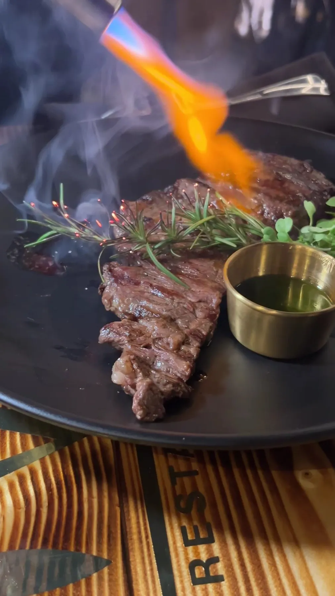
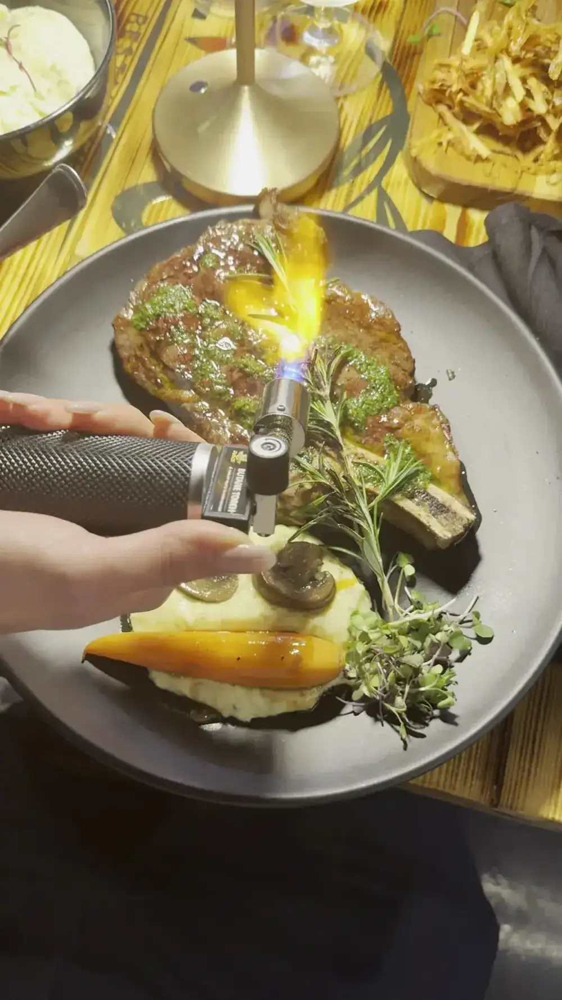

Tapas
Serrano ham croquettes, fried chickpeas with chorizo, garlic shrimp and Galician-style octopus. Guests start with the bruschetta.

Cocina mediterránea · Tampa, FL
Index of the menu
Tapas, grilled lobster, seafood paella and steaks off the brasa, served warm in a room with paintings on the walls.

What guests order
Tapas, the sea and the grill, in the words of the people who ate them.
Serrano ham croquettes, fried chickpeas with chorizo, garlic shrimp and Galician-style octopus. Guests start with the bruschetta.

Grilled lobster with garlic butter, seafood paella with saffron and shrimp enchilado in criolla sauce.

Skirt steak and ribeye reviewers call tender and well seasoned, plus picanha and slow-roasted pork.



4.8 / 5 · 2295 Google reviews
1We stopped by randomly and based off the reviews we expected everything to taste good but even then, it exceeded our expectations! The food was so amazing, excited to come back and try more. We had the Churrasco and the 1lbs Ribeye, both were tender and well seasoned. The drinks were also great, Our server Daylan gave us the best recommendations.
2Everything about our experience was amazing! We had the bruschetta to start which was amazing. I had the skirt steak with rice pilaf, and it was cooked perfectly, tender, flavorful, and absolutely delicious. My husband ordered the seafood paella, which was loaded with fresh seafood and had incredible flavor. We also had the Bonbón, which was amazing, and finished the meal with the crème brûlée.
3We stopped in to see if they take reservations and Barbara ended up seating us and was our waitress. She was very attentive and made us feel welcomed. It's such a cute place with nice paintings. There is limited seating. The service was great. Several people went by and asked if we needed anything. I ordered the grilled lobster. So delicious. My friend ordered a fish cordon bleu which he enjoyed.
About
Olivos Restaurant sits at 7503 W Waters Ave in Tampa and calls its cooking Mediterranean cuisine, bringing Spain's heart to Tampa. The menu runs from tapas and croquetas to Galician-style octopus, paella and slow-braised oxtail, with Cuban sides like moro rice and plantains.
Guests mention the room as much as the plates: nice paintings, a dark facade with a glowing red sign, and limited seating that rewards a reservation call. Servers Barbara and Daylan are named in reviews for being attentive without hovering, and one couple drove a long way back for it.

Visit
7503 W Waters Ave, Tampa, FL 33615
Seating is limited, so call ahead if you want a table. The seafood paella takes at least 30 minutes.